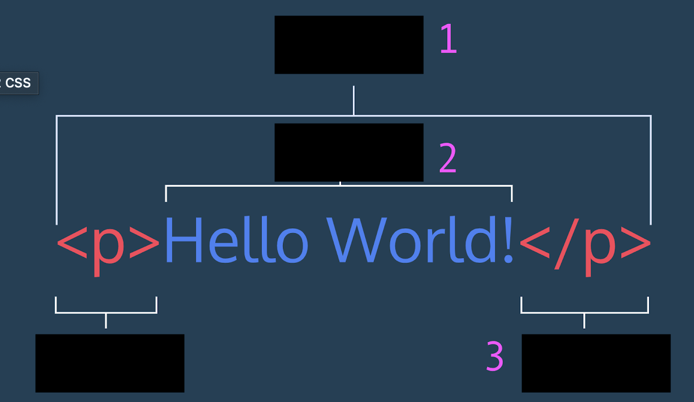

| McLuhan | ||
| # | Question | Answer |
|---|---|---|
| 1 | In the video, McLuhan says that the verb "to read" means | to guess |
| 2 | In the Q+A during McLuhan's video lecture, he is asked by an audience member: "if the medium is the message, and the what we say on TV doesn't matter, why are we here, and why am I asking this question?" McLuhan responds: | That he didn't say that what is said on TV doesn't matter, but that the content of the what is said on TV is independent from the effects of the program. |
| 3 | McLuhan could generally be said to be interested in the ____ of media: | its effects |
| 4 | Federman refers to McLuhan's statement that the "medium is the message" as the "famous _____." | McLuhan Theory |
| 5 | Federman quotes McLuhan's definition of media. McLuhan says a medium is: | "any extension of ourselves" |
| 6 | Federman writes that McLuhan always thought of media as a "growing medium," and offers two physical analogues of growing media. What was one? | Potting soil | Interactivity and Choice |
| # | Question | Answer |
| 1 | In the P5*JS interactivity tutorial, this hardware pair (invented by Doug Engelbart in 1968) are listed as the most common interactive interfaces. Much attention was spent on using these inputs throughout the tutorial. | keyboard and mouse |
| 2 | According to Lev Manovich, new media represents the convergence of which two histories? | media and digital computating |
| 3 | Barry Schwartz's paradox of choice is: | adding choices to people's lives increases their expectations and decreases their satisfaction |
| 4 | Based on Manovich's argument and subject from this excerpt, complete this statement taken from the text: "Just as the logic of old media corresponded to the logic of industrial mass society, the logic of the new media fits the logic of: | post-industrial society of personal variability |
| 5 | In the P5*JS tutorial, mouse position data was registered as: | X and Y |
| 6 | For Manovich, the term digital media is troublesome because: "it only reflects one idea - that of digitization." Instead he suggests: | Both "programmable media" or "computer media" | Bogost, Shaviro, HTML |
| # | Question | Answer |
| 1 | Bogost defines hyperemployment as a state of being: | "committed to our usual jobs and many other jobs as well" |
| 2 | What do you call items 1, 2, 3?
 |
1. element 2. content 3. opening and closing tags |
| 3 | How did the tutorial describe HTML element structures? | A child element is nested inside a parent element n |
| 4 | Bogost quotes economist John Maynard Keynes, who proclaimed in 1930 that by 2030, we would be: | able to spend more time on ourselves and work less |
| 5 | In the second essay by Shaviro, he references a concept by Marshall McLuhan, whose work we have already discussed in class. He describes TV as a cool medium, because unlike movies and theater: | TV is laid back and low intensity. |
| 6 | According to Shaviro's essay "Stop the World, I Want Off," you can never truly get off the grid. | True | Uberfication of the University + CSS |
| # | Question | Answer |
| 1 | The correct way to indicate that Arial font should be used for the an element marked with the ID "body-text" in CSS syntax is: | #body-text {font-family: Arial;} |
| 2 | In the piece published in the American Mathematical Society journal which features two short editorials commenting on MOOCs, the first author writes that:
"That we are collaborating on MOOCulus is significant. MOOCs are usually said to be “open” in the sense of open enrollment, but “open” might also mean "________." The source code and other materials for our MOOCs are available in a public repository, so anyone can look behind the scenes to see how we’ve built what we’ve built." |
open source |
| 3 | According to ASU President Michael Crow, the old model of the university was hallmarked by: | a focus on faculty, inherited from the former guild system which employed research faculty and needed students in order to make the system economically viable |
| 4 | Jeff Bezos will incorporate a most important principle from Amazon into his Day 1 Fund initiative for providing educational opportunities to under-served communities: | a genuine, intense customer obsession |
| 5 | According to Gary Hall, because of the transaction-based nature of the sharing-economy, many people insist on calling it instead: | the renting economy |
| 6 | This online learning platform, purchased by LinkedIn in 2015, could help LinkedIn complete the data-information cycle around individuals to formulate a monopolizing business model around education, job-training, and eventually, employment. | Lynda.com | Finn, O'Neil |
| # | Question | Answer |
| 1 | In Chapter one, Cathy O'Neil gives us an example of informal model she uses every day. Which is it? | What to make her family for dinner, who won't eat what, etc. |
| 2 | According to O'Neil, what didn't the U.S. News College ranking take into consideration in ranking universities? | tuition and fees |
| 3 | Which of the following was not an effect of the US News Ranking of universities discussed in O'Neil's chapter? | Students are better equipped to make well-informed decisions about potential universities because the ranking algorithms are transparent and debated by the public. |
| 4 | Which of the following philosophical traditions does Ed Finn not ascribe as a precursor to the development of algorithms? | rube goldberg machines |
| 5 | The nam-shubs of Neil Stephenson's story Snow Crash are: | ancient Sumarian incantations which command Sumerians to perform tasks a la binary logic |
| 6 | Finn lists too histories of computation: Turing's Cathedral by George Dyson and the Cathedral and the Bazaar by Eric Raymond. These two cultural structures are metaphors for modes of production in digital culture. What do they represent, respectively (first cathedral, then bazaar)? | a top-down dissemination model; an open-source and decentralized model | Embodiment |
| # | Question | Answer |
| 1 | In his essay "You Brain is not a Computer", Robert Epstein critiques the "IP" metaphor of human intelligence. What does "IP" stand for? | Information Processing |
| 2 | ARobert Epstein refers to a classroom exercise where he asks a student to draw a dollar bill from memory, and then draw a dollar bill while looking at the dollar bill. The first is a bad drawing, and the second shows much more detail (as would be expected). Another section refers to a a writing by Michael MacBeath (ASU). The cognitive scientist gives two explanations for how a baseball player catches a fly ball. 1) In line with the IP model of human intelligence, the player triangulates the ball's velocity to determine where best to go to catch the ball 2) " to catch the ball, the player simply needs to keep moving in a way that keeps the ball in a constant visual relationship with respect to home plate and the surrounding scenery (technically, in a ‘linear optical trajectory’)." What is conclusions do these examples support? | That data is not "stored and recalled" in the human brain; memory is much more complex and embodied. Problems are not computed and information is not processed by the mind, we solve problems through our physical situatedness |
| 3 | Judging by the texts we read from them, Robert Epstein and George Zarkadakis would very likely disagree on the following: | The role of the body in cognition |
| 4 | In the Coursera video, bioroboticist Barbara Webb suggests that we should resist the urge to: | assume that complex planning needs to go on inside a human or animal in order to perceive and act in the world. |
| 5 | Philosopher Andy Clark gives a wonderful example of the blue-fin tuna's physicality. He says that the tuna has the incredible ability to navigate gracefully through water, to turn quickly, and to start swimming quickly from a standstill. However, the actual muscle abilities of the tuna are too weak by about a factor of seven to actually perform these tasks all by itself; instead the tuna is taking advantage of natural currents of the water. What point does he say this example illustrates? | The embodied coupling between organism and environment |
| 6 | George Zarkadakis says this about Alexa and embodiment: | Alexa *does not* summon a visual image of a body in his mind now (like he would for a friend on the telephone), but if it become more interactive, it would. | P5*JS tuts 1 & 2 |
| # | Question | Answer |
| 1 | The correct way to draw a circle is: | ellipse(x center of circle, y center of circle, diameter, diameter) |
| 2 | What is the difference between
function setup() {
} and function draw() { } |
setup is run once, draw loops endlessly. |
| 3 | What is the order of shapes to be drawn? List them from back, middle, to front.
function draw() { background(204); rect(160, 30, 260, 20); ellipse(140, 0, 190, 190); triangle(0, 54, 392, 9, 392, 66); } |
rect, ellipse, triangle |
| 4 | Correctly identify the color of the shapes in the following code:
function draw () { background(0, 0, 0); line(0, 20, 40, 80); fill(255, 0, 0); ellipse(132, 82, 200, 200); fill(0, 255, 0); triangle(228, -16, 200, 200); fill(0, 0, 255); rect(268, 118, 200, 250); } |
circle red; triangle green; rectangle blue |
| 5 | "width" and "height" are: | "special variables" which always reflect the canvas size |
| 6 | In code, symbols like +, −, and * are called: | operators | Experiential Media Systems |
| # | Question | Answer |
| 1 | What is an electrical signal? | varying quantities over time (usually voltage in electrical engineering) |
| 2 | Most commonly digital signals will be one of two values -- like either 0V or 5V. Timing graphs of these signals look like: | square waves |
| 3 | discrete versus continuous | rect, ellipse, triangle |
| 4 | According to McLuhan, traditional media such as books or newspapers can be "interactive": | yes |
| 5 | What ishyperbole or ‘cyberbole’ observed by Woolgar (2002) to be widespread in the early 1990s, when many viewed the Internet as a technology that promised unimagined and unhindered opportunities for creative action and sociality? | the myth of interactivity |
| 6 | Manovich distinguishes between ___ and ___ forms of interactivity. | closed and open | Sound and Music |
| # | Question | Answer |
| 1 | Pauline Oliveros says that hearing and listening are the same things. | false |
| 2 | Oliveros says the following are capable of deep listening: | humans and other animals |
| 3 | Oliveros says deep listening: | is a practice that must be trained |
| 4 | Muzak is Ambient Music. | false |
| 5 | Eno was influenced by a trip to this African nation on his "On Land" album: | Ghana |
| 6 | Ambient music, particularly Eno's album "On Land" blurs distinctions between: | electric and acoustic sounds | Games |
| # | Question | Answer |
| 1 | According to Gingold, play and game are identical. | false |
| 2 | What does Gingold say is the reason for play? | for its own sake |
| 3 | Which game is not mentioned in the NYTimes article on mental health and games? | Everything |
| 4 | Designers of the Parasite alternate reality game developed this Easter Egg in response to a freshman query. | a 35-page D&D campaign themed around the Parasite |
| 5 | Wark says that "all games are": | Digital |
| 6 | Wark quotes a prominent game theorist who says that: One of the the great ironies of history is: | the affinity between games and computers | P5*JS tutorial 3 |
| # | Question | Answer |
| 1 | function setup () {
} and function draw () { } are run, respectively: _____ and ______ |
once and repeatedly |
| 2 | Which easing value will have the most number of steps? | (the smallest number) |
| 3 | What is the expected output to the console of the follow script? (if you don't know, try it!)
//start script let value = 1; function setup() { createCanvas(400, 400); } function draw() { background(220); value++; console.log(value); } //end script |
the variable "value" will increase by one for every iteration of draw |
| 4 | The translate() function... | offsets the intersection of the x and y xis (0,0) |
| 5 | push() and pop() | create temporary conditions to affect isolated objects |
| 6 | the order of translations matters | true |